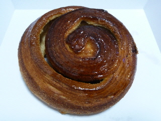
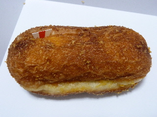
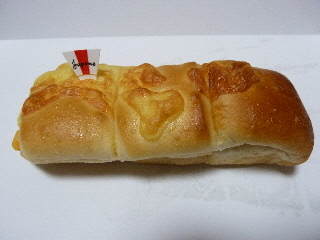
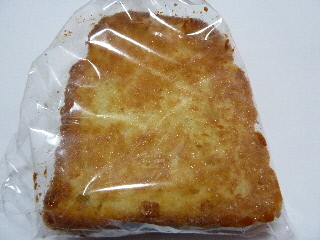
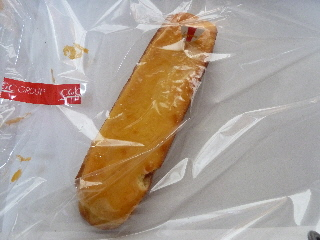

グッディーのでっかい珈琲ロール
2014/12/13
コンガリいい色の珈琲ロールです。
105円+税です。大きいのに安いです。

外側はコーヒーらしく、香ばしい味でした。
内側はチョコチップが入っていて、甘かったです。
どちらかといえば、内側が好きかな。
スーパーのグッディー各店で販売しているパンです。
2014/12/13
コンガリいい色の珈琲ロールです。
105円+税です。大きいのに安いです。

外側はコーヒーらしく、香ばしい味でした。
内側はチョコチップが入っていて、甘かったです。
どちらかといえば、内側が好きかな。
2014/08/27
コンガリといい色してますね。

美味しそうな揚げパンです。
中のハムエッグも美味しかったです。
卵が多目で好きな味でした。
また食べたいな。
2014/02/21
明太子とチーズのパンです。
美味しそうだ。

明太子の風味とチーズのコクがよく合ってますね。
塩分があるんですが、チーズのマイルドな感じがして美味しかったです。
2013/12/20
コンガリ焼けてて美味しそうなフレンチトーストです。

見た目いいですね。
コンガリ味で美味しかったです。焦げ目って美味しいですよね。
固いパンをフレンチトーストにしてあるので、しっとりしてるんですが、耳とかとっても固かったです。
2013/11/12
大きくてお買い得な感じのするパンでした。

袋にぺったりとパンがくっついちゃったんですが、綺麗に採れて良かったです。
デニッシュパンにベイクドチーズが乗っかった感じです。
柑橘系のジャムがいい味を出していました。
おやつに丁度いいパンが多いですね。